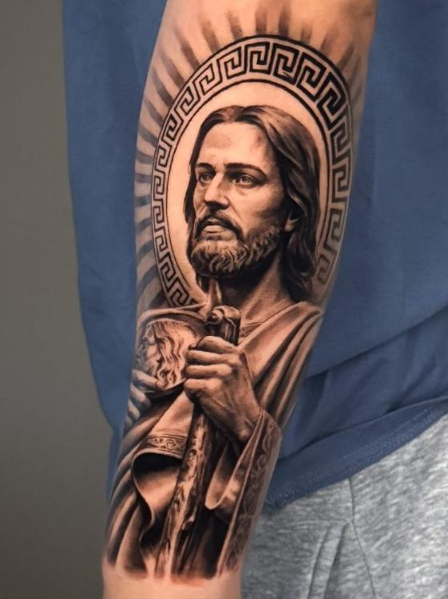
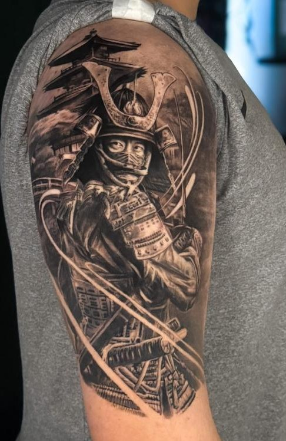
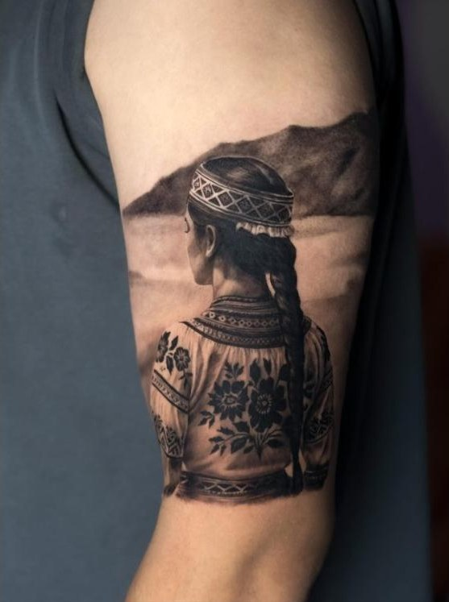
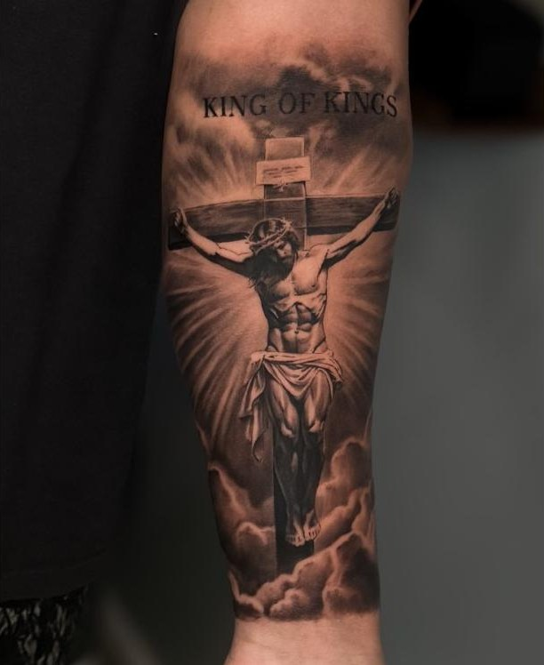
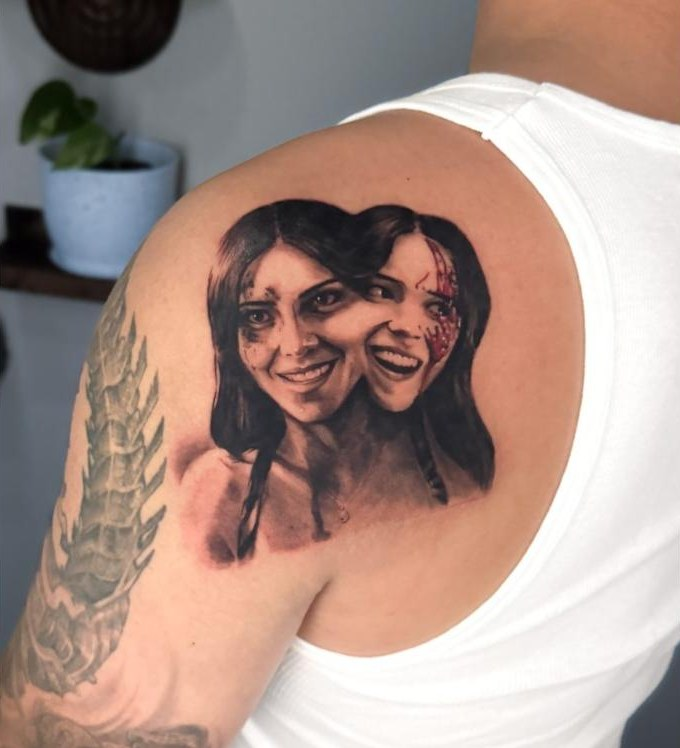

Faith, warriors and wild things, tattooed with care in deep black and soft light.
Daria





“I don’t do small talk. I do big tattoos.”
Art school first, tattoos ever since. Eleven years of tattooing all over the world, and black and grey realism is where I feel at home.
DariaSix simple steps, and you always know what comes next.
After your session you’ll get detailed written aftercare, and I stay in touch through the whole healing. At three weeks, send me a photo so I can check how it healed.
First tattoo? Take your time and choose an artist you trust. Then you’ll never need a cover-up.
Didn’t find yours? Get in touch.
Every piece is quoted individually once we’ve talked through the idea, size, placement and detail. You’ll know the estimate and the number of sessions before you book.
Realism needs room for detail, texture and light to read clearly and age well. I’ll suggest the size that works best for your idea and placement.
References are welcome for inspiration, but every design is drawn from scratch, just for you.
Yes. A non-refundable deposit confirms your appointment and goes toward the total price. If you cancel or reschedule with less than 48 hours’ notice, the deposit is forfeited.
The studio is cash only, and there’s an ATM inside.
Skip alcohol for 24 hours before, eat a protein-rich meal 1–2 hours before, and wear comfortable clothes that give easy access to the area.
Some spots are more sensitive than others, but most people handle it better than they expected. We take breaks whenever you need them.
Blood Orange Tattoo, 3414 ½ Fremont Ave N, Suite C, upstairs from Ester’s Enoteca. It’s a private entrance on the second floor (stairs only, no elevator); ring the bell or message me when you arrive. There’s paid street parking nearby, and free parking is often available along the water on N 34th or 35th St.
The studio is appointment only. Walk-ins are only possible on flash days, which are announced on Instagram.
Yes. You must be 18 or older and bring a valid photo ID.
Tell me about your idea. You’ll get a reply with questions, a size suggestion and open dates.
Prefer Instagram? DM @join.tatts